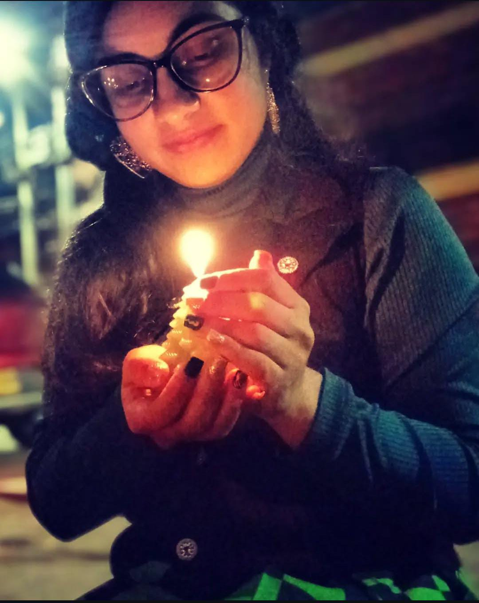

¿QUIÉNES SOMOS?
Descarga nuestra Resolución Oficial
Conoce el documento que respalda nuestras acciones y define el marco legal de la Plataforma de Juventudes de Mosquera.
Rendición de Cuentas 2024
En la Plataforma de Juventudes de Mosquera, promovemos la transparencia y el acceso a la información. Te invitamos a conocer los avances, logros y gestión realizada durante el año 2024 en nuestra Rendición de Cuentas.
2024Descubre Nuestros Servicios para Jóvenes
Explora una variedad de servicios diseñados especialmente para jóvenes en la Plataforma de Juventudes de Mosquera. Desde orientación profesional hasta actividades recreativas, nuestros servicios están pensados para apoyarte en todas las etapas de tu vida. ¡Descubre cómo podemos ayudarte a alcanzar tus metas y potenciar tu desarrollo personal y profesional!
Nuestro equipo
La Plataforma está integrada por líderes y representantes de diversas organizaciones juveniles del municipio. Algunos de nuestros roles clave incluyen:

Johanna Andrea Chavarro Sarmiento
Presidenta de la Plataforma Municipal de Juventudes, represento a la Asociación sin Ánimo de Lucro De Vuelta a la Vida

Juan Esteban Parra Amariles
Vicepresidente de la Plataforma Municipal de Juventudes, representa a la organización Los Meseros
Kevin Yesid Ávila Parra
Coordinador líder del comité de comunicaciones de la Plataforma Municipal de Juventudes, representa a la organización M&F.

David Santiago Cantor Vargas
Delegado Departamental y Provincial de la Plataforma de Juventudes, representa a la organización Hijos Del Zipa

Nikhol Puerto
Delegada Provincial de la Plataforma de Juventudes, representa a la organización Malas Hierbas

Cristian Grajales
Coordinador líder del comité de bienestar y ética de la Plataforma Municipal de Juventudes, representa a la organización Juventud Agricola Urbana JAU